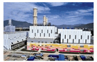
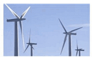
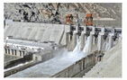
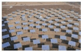
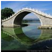
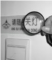
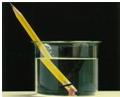
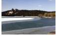
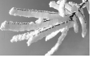

2015年北京市中考物理试题 · 选择题 第1、2、3、4、5题
1．（2分）在常温干燥的情况下，下列餐具属于导体的是（ ）
A．塑料筷子B．陶瓷碗C．不锈钢勺D．玻璃果盘
2．（2分）科技小组的同学们调查发现，北京地区存在几种不同类型的发电站，如图所示，下列发电站发电过程中，利用不可再生能源发电的是（ ）
A．

燃气电站B．
风电站C．

水电站D．
太阳能电站3．（2分）汽车是人们常用的交通工具，下列与汽车有关的说法中正确的是（ ）
A．汽车轮胎上刻有花纹，是为了减小摩擦
B．汽车装有消声器，就可以把汽车产生的噪声全部消除
C．载重汽车的车轮做得比较宽，是为了增大载重汽车对路面的压强
D．驾驶员开车是要系好安全带，主要是为了防止由于惯性带来的伤害
4．（2分）如图所示的四种现象中，由于光的反射形成的是（ ）
A．手在屏幕上形成“手影”B．

景物在水中形成“倒影”C．

放大镜把文字放大D．
笔好像在水面处“折断”5．（2分）如图所示的四个物态变化的实例中，属于液化的是（ ）
A．

初春，湖面上冰化成“水”B．盛夏，草叶上形成“露珠”
C．深秋，枫叶上形成“霜”
D．

严冬，树枝上形成“雾凇”